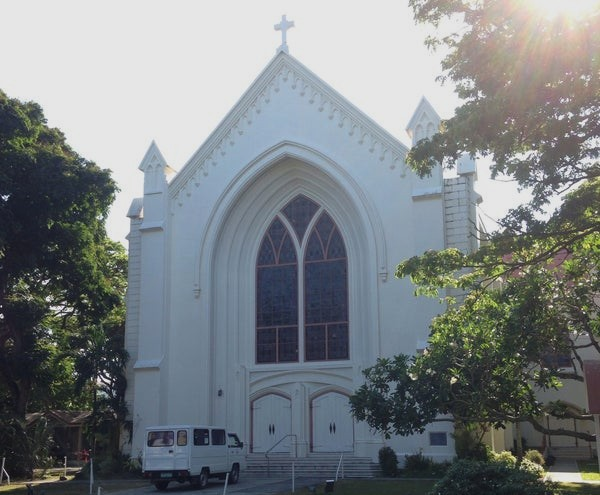
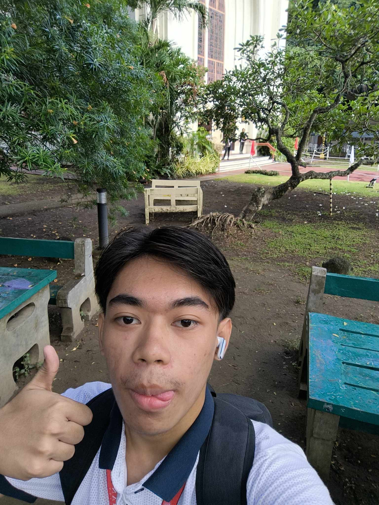
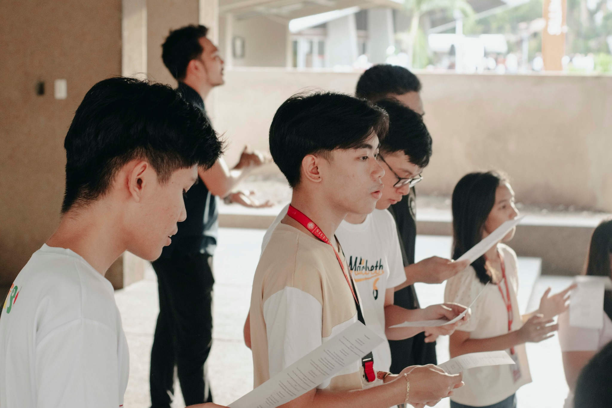
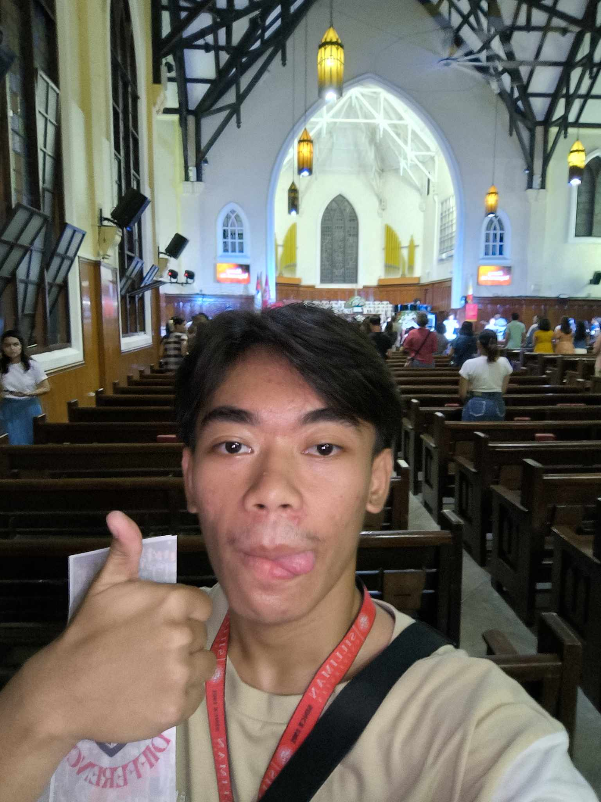
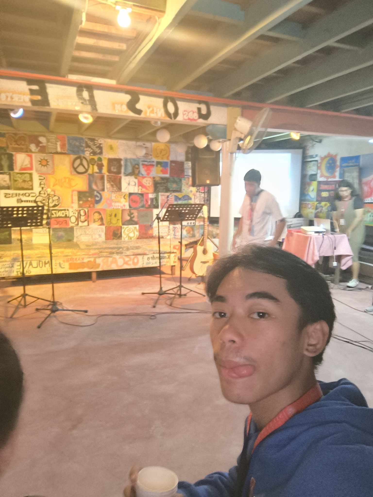
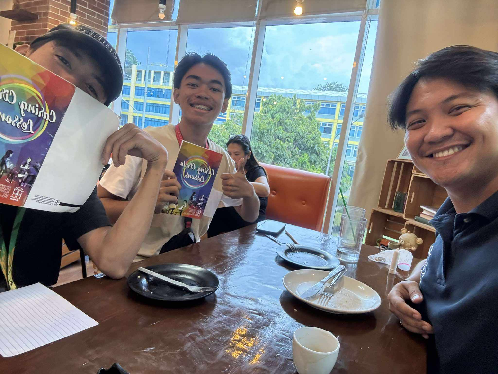
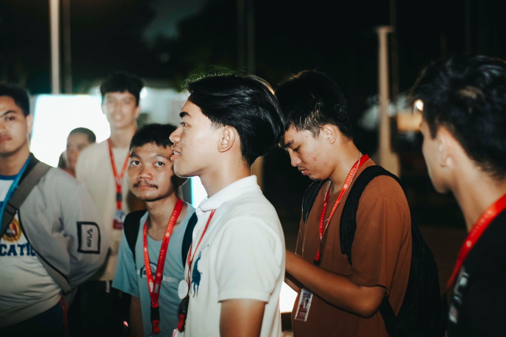
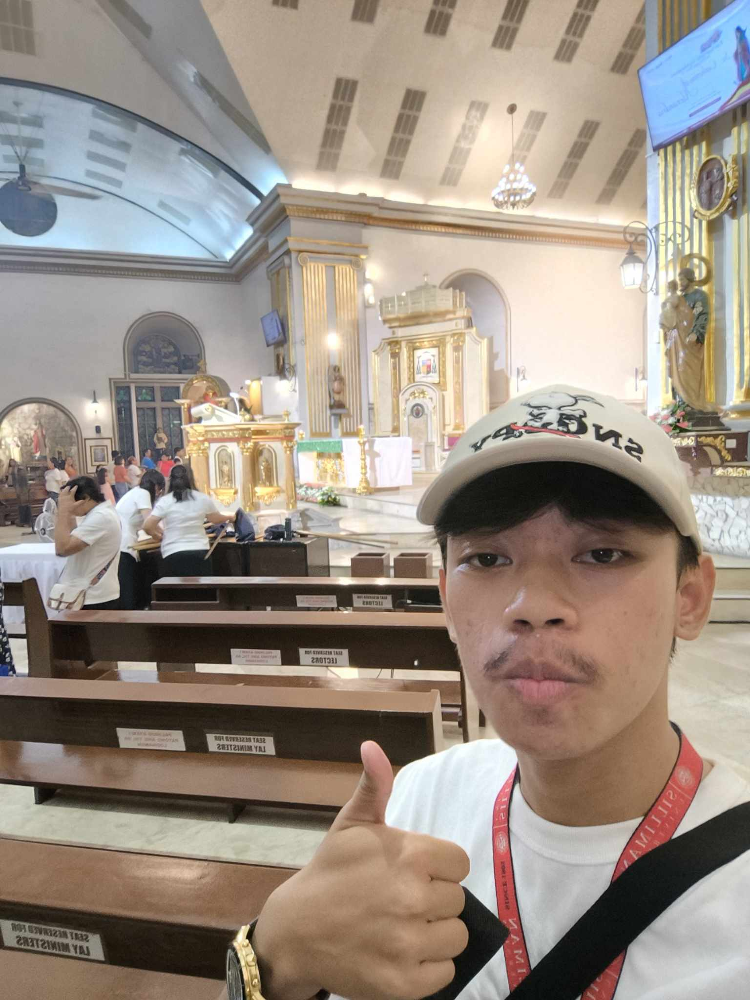

Church
Journal Entries
GE10A

CCS Opening Devotion
On August 19, 2024, I attended the CCS Opening Devotion, organized by the College of Computer Studies (CCS), from 7:30 to 9 AM. This activity marked the beginning of the academic year with a spiritual gathering to reflect, pray, and seek guidance for the months ahead. As a participant, I joined the worship session, listened to the speaker’s message, and reflected on the values shared during the devotion.
I was able to concentrate myself and get ready for the challenges of the school year both spiritually and mentally thanks to this activity. The speaker's message of faith and resilience inspired me and gave me a sense of purpose and optimism. The group prayer, where everyone joined together in harmony, was the most significant aspect. It served as a reminder to me of the value of building a solid foundation first.
This experience encouraged me to make time for moments of reflection and prayer, even amidst a busy schedule. I want to attend more devotions like this to stay grounded and motivated throughout the year. If I could participate again, I’d focus on sharing my thoughts during the open reflection to engage more deeply.
Because of this activity, I am more grounded in my faith and ready to face the challenges of the academic year with a positive mindset. I feel inspired to incorporate regular spiritual practices into my life to maintain balance and peace. This event also reminded me of the strength that comes from being part of a supportive community.

Kinaiya sa Gugma
On August 28, 2024, I attended Kinaiya sa Gugma, organized by PSALM Dumaguete, from 4 to 6 PM. The session focused on exploring the different facets of love based on biblical principles. As a participant, I joined the discussion, listened to testimonies, and reflected on how love is expressed in various aspects of life.
This activity gave me a deeper understanding of the importance of love in building relationships and staying true to my values. I was especially moved by the personal stories shared by the speakers, which helped me see love as an active choice rather than just a feeling. The most impactful moment was realizing how much love can transform not just personal relationships but also our approach to life’s challenges.
This experience encouraged me to be more intentional in showing love and kindness to others. I want to apply what I’ve learned in my daily interactions and seek opportunities to support and uplift those around me. If I could attend again, I’d share my own experiences to contribute more meaningfully to the discussion.
Because of this activity, I am more aware of the power of love to influence and improve every part of life. I feel inspired to practice love through my actions and decisions, making it a central value in everything I do. This session also reminded me that love is not just about emotions but about commitment and understanding.

Jesus to Make A Difference (J2MAD): Worship Live Concert
On August 31, 2024, I attended the Jesus to Make A Difference (J2MAD): Worship Live Concert, organized by the Silliman University Youth Worship, from 6 to 8 PM. This event was a vibrant celebration of faith through music and worship. As a participant, I sang along, reflected on the messages of the songs, and connected with others who shared the same faith.
This exercise was spiritually rejuvenating and uplifting. The worship team's enthusiasm and the songs' stirring lyrics served as a reminder of God's presence in my life. Seeing everyone worship together, unified in religion, was the most unforgettable moment, and it made me feel like I belonged to a larger community. It served as a reminder of how effective music can be in communicating and spreading faith.
I was motivated to look into worship as a means of strengthening my bond with God by this experience. In the future, I hope to participate in planning more worship gatherings and attend more of them. If I were able to take part once more, I would encourage friends to come and partake in the experience of group worship.
Because of this activity, I am more connected to my faith and inspired to worship more actively. I feel motivated to strengthen my spiritual life through music and fellowship. This event also reminded me of the joy and hope that come from celebrating faith with others.

Acoustic Night
On September 17, 2024, I attended Acoustic Night, organized by the Silliman University Youth Worship, from 6 to 8 PM. This event combined music and worship, creating a relaxed atmosphere for attendees to connect spiritually through acoustic songs and fellowship. As a participant, I joined in singing along to worship songs and reflected on the messages shared through the music.
This activity was both uplifting and calming, allowing me to focus on my faith in a creative and meaningful way. The simplicity of the acoustic setup made the experience feel more personal, and the messages in the songs helped me reflect on God’s presence in my life. The most touching part was how the music brought everyone together, reminding me of the power of worship to unite and inspire.
This experience encouraged me to explore more ways to use music as a form of worship and connection with others. I want to attend similar events to continue deepening my faith and building relationships with my spiritual community. If I could participate again, I’d invite friends to share in the experience and help spread the joy and peace it brings.
Because of this activity, I am more inspired to use music as a way to express and strengthen my faith. I feel more connected to my spiritual community and encouraged to attend more worship events. This event also reminded me of how simple moments can bring profound spiritual insights and growth.

CCL Lesson
On September 25, 2024, I attended the CCL Lesson, organized by PSALM, from 3 to 5 PM. This session focused on studying core Christian life principles, including faith, service, and personal growth. As a participant, I engaged in discussions and activities designed to deepen our understanding of how to live a Christ-centered life. The session also encouraged us to reflect on our personal relationship with God.
This activity reminded me of the importance of aligning my daily actions with my faith. I found the discussions on service particularly meaningful, as they challenged me to think about how I can serve others in my community. The best part was learning from the perspectives of others in the group, which helped me see how faith can be applied in different situations. It was a valuable opportunity for self-reflection and growth.
This experience inspired me to take more active steps in living out my faith through service and kindness. I want to continue learning and applying Christian values in my interactions and decisions. If I could attend again, I’d prepare by reflecting on my own experiences to contribute more meaningfully to the discussions.
Because of this activity, I am more committed to growing in my faith and living a Christ-centered life. I feel motivated to serve others and use my actions to reflect God’s love. This session also reminded me that faith is about continuous learning and applying what I’ve learned to make a difference.

The Book of James
On October 2, 2024, I attended a session on The Book of James, organized by PSALM, from 6 to 8 PM. This Bible study explored the teachings of the Book of James, focusing on faith in action and practical ways to live according to God’s word. As a participant, I joined the group discussions, listened to interpretations, and reflected on how to apply the lessons to my daily life.
Through this activity, I was able to learn that faith is something that should be shown by deeds as much as words. The focus on perseverance and humility particularly motivated me because it matched my personal experiences. Hearing how other people interpreted the passages and used them in their own life was the most enlightening aspect. It served as a reminder that discovering and developing one's faith is a lifelong process.
This experience motivated me to practice my faith more actively by helping others and staying true to my values. I also want to continue attending Bible studies to deepen my understanding of scripture and strengthen my relationship with God. If I could join again, I’d prepare by reading the passages beforehand to contribute more thoughtfully to the discussion.
Because of this activity, I am more inspired to face challenges. I am now motivated to join sunday mass every week. I am encouraged to trust in the power of prayer.

40th Annual Fiesta: Opening Salvo
On November 16, 2024, I attended the 40th Annual Fiesta: Opening Salvo, held at the Dumaguete Cathedral Church, from 5 to 7 PM. This event marked the start of the church’s annual celebration, filled with music, worship, and fellowship. As a participant, I joined the worship session and reflected on the significance of the celebration in bringing people closer to God and each other.
I learned from this activity how customs can promote community and deepen faith. People of all ages came together to celebrate and worship, and I was really struck by how united everyone seemed. The music, which added energy and positivity to the occasion, was the most memorable aspect. It brought to mind the happiness and optimism that accompany sharing one's religion with others.
This experience encouraged me to participate more actively in church traditions and events. I also want to share the joy I felt during this event with others by inviting them to join similar activities. If I could attend again, I’d take more time to appreciate the cultural and spiritual significance of the celebration.
Because of this activity, I am more grateful for the role of faith in bringing people together. I feel inspired to participate in more church events and share these experiences with others. This event also reminded me of the importance of celebrating faith and community through meaningful traditions.

IVCF Bible Study: Beginner's Personal Badge InterVarsity Christian Fellowship
On November 19, 2024, I joined the IVCF Bible Study: Beginner's Personal Badge, organized by the InterVarsity Christian Fellowship (IVCF) Negros Oriental, from 1 to 3 PM. This session focused on guiding beginners in their faith journey, emphasizing foundational Christian teachings and personal growth. As a participant, I engaged in discussions and activities that encouraged self-reflection and a deeper understanding of scripture.
This activity helped me reconnect with the basics of my faith, which was both refreshing and grounding. I appreciated the supportive and welcoming environment that made it easy to ask questions and share thoughts. The most impactful moment was realizing how much I could learn from going back to the fundamentals of my faith, which gave me a new perspective on my spiritual journey. It reminded me that growth starts with a strong foundation.
This experience inspired me to revisit the core principles of my faith and apply them in my daily life. I want to continue attending Bible studies to learn more and grow spiritually. If I could participate again, I’d prepare by reading related scripture beforehand to contribute more effectively to the discussions.
Because of this activity, I am more grounded in my faith and motivated to keep learning and growing spiritually. I feel encouraged to deepen my relationship with God and use what I’ve learned to live a more meaningful life. This session also reminded me of the importance of building a strong foundation to grow and face challenges with confidence.